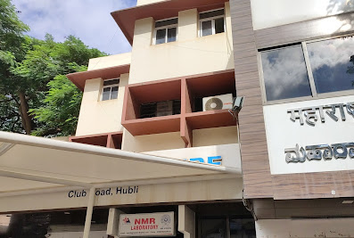
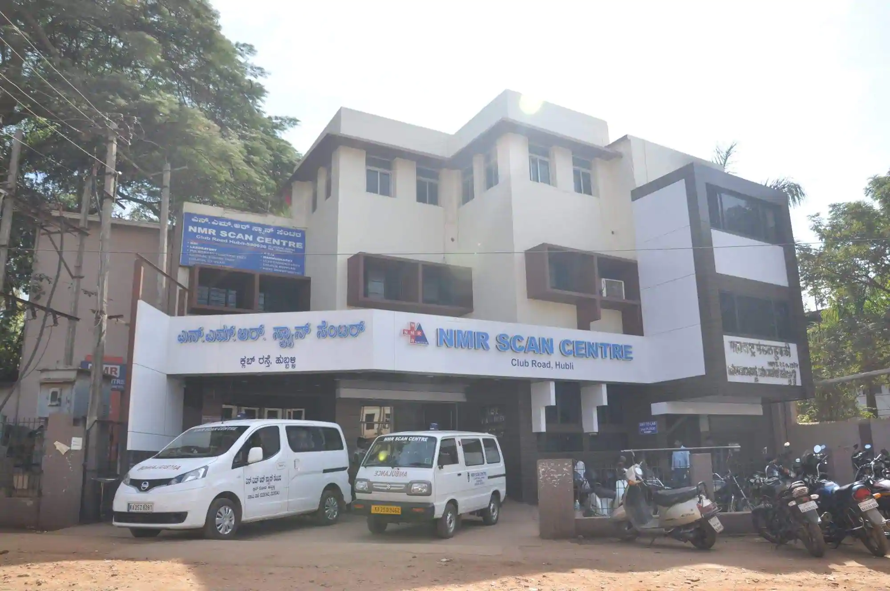
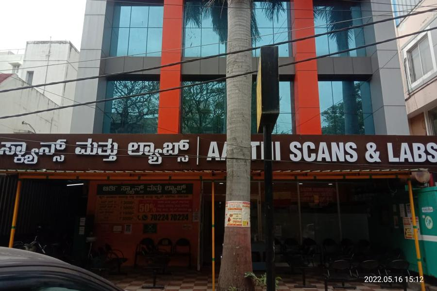

Hubli Scan Center
Eureka Junction,Hubli

NMR Scan Center, Hubli
Club Road, Deshpande Nagar, Hubli

Aarthi Scan Center, Bangalore
Jayanagar, Bangalore
Santosh Diagnostic Services
St.John's Church Road, Bangalore
Care Diagnostic Services
Austin Town, Bangalore
Cauvery Diagnostic Services
Basveshwara Nagara, Bangalore